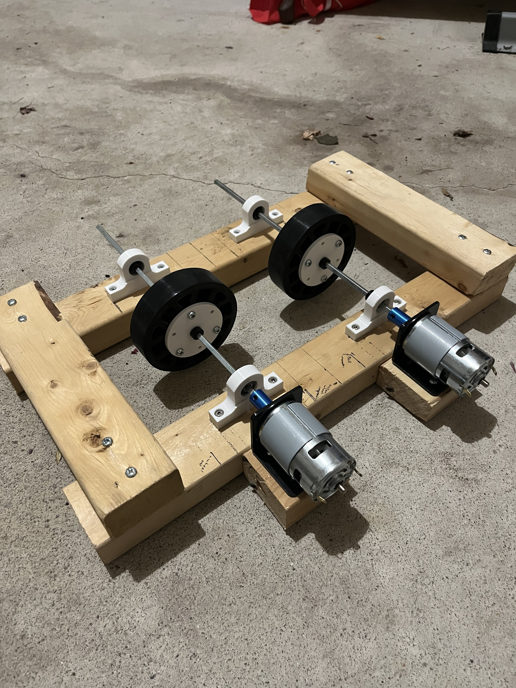
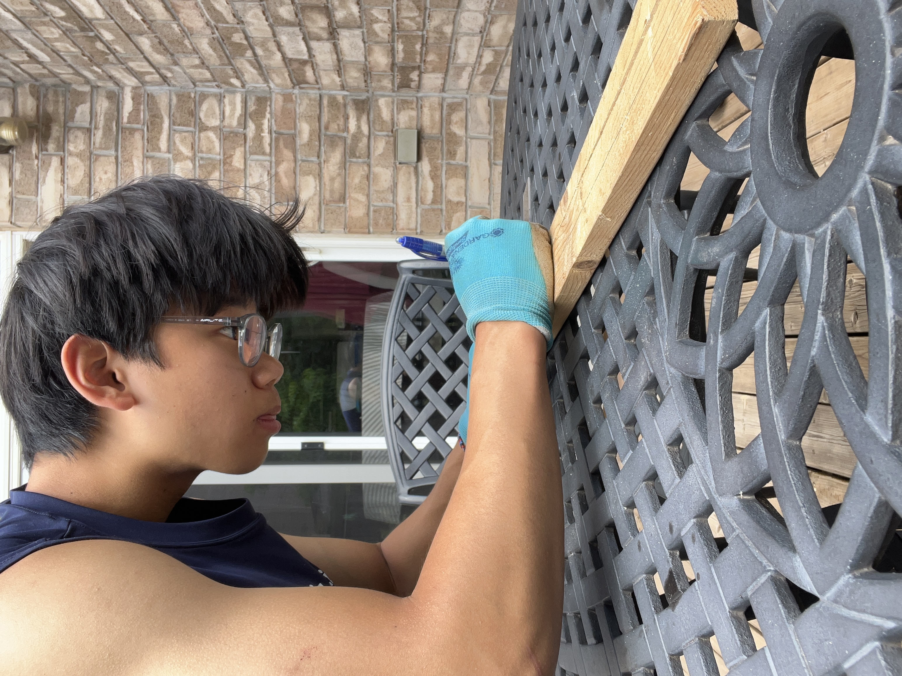

Launch concept
Two counter-rotating wheels accelerate each ball through controlled compression and friction.
Project / 03
A dual-wheel launcher being developed as an adjustable practice tool and a hands-on way to explore projectile motion.

01 — Overview
This in-progress project uses two 775 DC motors to drive counter-rotating launch wheels. The current prototype concentrates on the hardest mechanical fundamentals: holding both shafts rigidly, keeping the wheels aligned, transferring motor power reliably, and establishing the right ball compression.
The wooden test frame makes it easy to reposition components while the white printed supports secure the shafts. Future iterations will focus on a controlled feed path, adjustable launch angle and speed, a safer enclosed structure, and repeatable testing on court.
Two counter-rotating wheels accelerate each ball through controlled compression and friction.
Dual 775 DC motors, shaft couplers, supported axles, and purpose-built wheel hubs.
Add feeding, guarding, speed control, angle adjustment, and structured performance testing.
02 — Skills used
Developed the two-wheel architecture, shaft layout, and adjustable prototype frame.
Produced custom bearing and shaft supports for accurate, repeatable placement.
Coupled the motors to long drive shafts and aligned both rotating assemblies.
Used a simple, reconfigurable structure to test dimensions before committing to a final frame.
03 — Progress gallery
These uploaded photos document the drive system as it moves from layout to a more stable working assembly.

